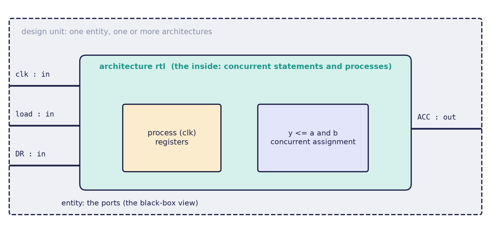

Chapter 6: VHDL: Entities, Architectures and Processes¶
VHDL, the VHSIC Hardware Description Language, describes the same hardware as Verilog, but in a different spirit. It is strongly typed, deliberately verbose and reads like a contract: you say exactly what each signal is, and the compiler refuses to guess. This chapter introduces the two halves of every design (entity and architecture), the libraries and types that nearly every design uses, the concurrent statements that describe wires, and the process, the construct that holds sequential statements. It ends with the one idea that newcomers find hardest, the difference between a signal and a variable. The next chapter builds registers, state machines, arithmetic and testbenches.
6.1 Entity and architecture¶
VHDL was created in the 1980s for the United States VHSIC programme and standardised as IEEE 1076. As with Verilog, it has two uses: synthesis, for a subset that maps to real gates and flip-flops, and simulation, for the full language, including testbenches that cannot be built in silicon.
Every VHDL design has two halves (Figure 6.1).
- The entity is the black box: its name and its ports (the pins), each with a name, a direction and a type.
- The architecture is the inside: the logic that drives the outputs. One entity can have several architectures (behavioural, structural, RTL), and you choose one when you instantiate the entity.

-- The interface: a 2-input AND gate
entity and2 is
port (
a : in std_logic; -- input port
b : in std_logic; -- input port
y : out std_logic -- output port (no ';' after the last port)
);
end entity and2;
-- One implementation of that interface
architecture rtl of and2 is
begin
y <= a and b; -- a concurrent signal assignment
end architecture rtl;
Port directions, called modes, are in, out, inout and buffer.
6.2 Libraries and types¶
Almost every real design opens with the IEEE library and two packages:
library ieee;
use ieee.std_logic_1164.all; -- std_logic, std_logic_vector, rising_edge
use ieee.numeric_std.all; -- unsigned, signed, to_integer, to_unsigned
The package std_logic_1164 provides the nine-valued logic type; numeric_std provides typed arithmetic on vectors. Do not use the old vendor packages std_logic_arith, std_logic_unsigned or std_logic_signed: they are not standard and clash with numeric_std.
std_logic and strong typing¶
The type std_logic is not just 0 and 1. It resolves several drivers on one wire and models real electrical states.
| Value | Meaning | Value | Meaning |
|---|---|---|---|
'0' |
strong drive low | 'Z' |
high impedance (tri-state) |
'1' |
strong drive high | 'W' |
weak unknown |
'U' |
uninitialised | 'L' |
weak 0 (pull-down) |
'X' |
strong unknown, or a conflict | 'H' |
weak 1 (pull-up) |
'-' |
don't care |
A std_logic_vector is a bundle of these bits, for example std_logic_vector(7 downto 0) for a byte. VHDL's strong typing is its defining trait: you cannot add a std_logic_vector to an integer, or assign a 4-bit vector to an 8-bit one, without an explicit conversion. The compiler catches width and type mistakes that other languages would silently miscompute.
downto and to
Use downto for numbers, as in (7 downto 0), so that bit 0 is the least significant bit. Use to only for arrays where the order of the indices carries no numeric weight. Mixing them is a classic source of reversed buses.
6.3 Concurrent statements¶
Inside an architecture, statements are concurrent: they all run in parallel, like wires, not like lines of a program. Their order does not matter. Each concurrent signal assignment describes one continuously driven signal.
architecture rtl of logic is
signal p, q : std_logic;
begin
p <= a and b; -- these three run
q <= c or d; -- simultaneously; the
y <= p xor q; -- order here is irrelevant
end architecture rtl;
Conditional assignment: when / else¶
when ... else builds priority logic in one line. It reads top to bottom like a chain of if and else, and the final else is mandatory.
-- 2-to-1 multiplexer
y <= a when sel = '0' else
b;
Selected assignment: with / select¶
with ... select switches on one expression and must cover every possible value, using when others to be exhaustive. It maps naturally to a multiplexer.
library ieee;
use ieee.std_logic_1164.all;
entity mux4 is
port (
d0, d1, d2, d3 : in std_logic_vector(7 downto 0);
sel : in std_logic_vector(1 downto 0);
y : out std_logic_vector(7 downto 0)
);
end entity mux4;
architecture rtl of mux4 is
begin
with sel select
y <= d0 when "00",
d1 when "01",
d2 when "10",
d3 when "11",
(others => 'X') when others; -- also covers 'Z', 'U', ...
end architecture rtl;
The aggregate (others => '0') is the width-independent way to say "all bits 0". Because sel is a std_logic_vector, it can carry values beyond "00" to "11" (for example 'X'), so the when others branch is required for legal, exhaustive code.
6.4 Processes¶
A process is a concurrent statement that contains sequential statements, executed from top to bottom. It is how you write if, case and clocked logic. A combinational process lists every signal it reads in its sensitivity list, and the process re-runs whenever one of them changes.
-- A combinational multiplexer written as a process
process (a, b, sel) -- sensitivity list: every input that is read
begin
if sel = '0' then
y <= a;
else
y <= b;
end if;
end process;
An incomplete sensitivity list
If you leave out a signal that the process reads, simulation and synthesis disagree, and you get phantom latches. In VHDL-2008 you can write process(all), which includes every signal that is read automatically. Prefer it for combinational logic.
if and case work as you would expect inside a process:
process (all)
begin
case op is
when "00" => y <= a + b;
when "01" => y <= a - b;
when others => y <= (others => '0');
end case;
end process;
6.5 Signals and variables¶
This is the concept that trips up newcomers most. Inside a process there are two kinds of storage, and they are updated at different times.
Signal (<=) |
Variable (:=) |
|
|---|---|---|
| Declared | in the architecture, before begin |
in the process, before its begin |
| Assigned with | <= |
:= |
| When it updates | deferred: the new value applies after the process suspends | immediately: the next line sees the new value |
| Represents | a wire or register between blocks | temporary local storage |
If a signal is assigned twice in one run of a process, only the last assignment counts; with a variable, each assignment counts in turn. A signal therefore behaves like Verilog's <=, and a variable like Verilog's =.
Example 6.1: adding three numbers, two ways
We want sum = a + b + c inside one process. First with a variable, which updates at once:
process (a, b, c)
variable tmp : unsigned(7 downto 0);
begin
tmp := unsigned(a);
tmp := tmp + unsigned(b); -- uses the value just written above
tmp := tmp + unsigned(c); -- again, the latest value
sum <= std_logic_vector(tmp);
end process;
With a = 3, b = 4, c = 5 the variable takes the values 3, 7 and 12 in turn, and sum is driven with 12.
Now the same idea with a signal s, declared as signal s : integer := 0;:
process (a, b, c) -- a, b, c are integers here
begin
s <= a; -- s does NOT change here...
s <= s + b; -- ...so s on the right is still the OLD value
end process;
- When the process runs,
sis 0. - The first statement schedules
s ← 3, but nothing happens yet. - The second statement reads the old
s = 0and scheduless ← 0 + 4, replacing the first scheduled value. - When the process suspends,
sbecomes 4. The inputcwas never used, and the result is wrong.
The rule of thumb: use variables for intermediate results inside one process, where each line builds on the one before; use signals to communicate between processes and to model registers.
Many drivers
A signal should have exactly one driver. Assigning the same signal in two concurrent statements or two processes creates a driver conflict, and std_logic resolves it to 'X'. The only intended exception is a tri-state bus, where the other drivers output 'Z'.
6.6 Summary¶
- An entity is the interface (name, ports, modes); an architecture is an implementation of it. One entity can have several architectures.
- Open every design with the IEEE library,
std_logic_1164andnumeric_std.std_logichas nine values; strong typing keeps widths and conversions honest. - Use
downtofor numeric vectors so bit 0 is the least significant bit. - Concurrent statements are wires; their order is irrelevant.
when/elsegives priority logic and requires a finalelse;with/selectmust be exhaustive. - A process runs its statements in order; it is sensitive to the signals in its list (use
process(all)in VHDL-2008 for combinational logic). - Signals update when the process suspends (deferred, last assignment wins); variables update at once.
- Give each signal exactly one driver.
6.7 Exercises¶
Exercise 6.1. Write the 2-to-1 multiplexer with entity mux2, ports a, b, sel and y (all std_logic) in two architectures: one using a concurrent when/else, one using a process.
Answer
library ieee;
use ieee.std_logic_1164.all;
entity mux2 is
port ( a, b, sel : in std_logic;
y : out std_logic );
end entity mux2;
architecture dataflow of mux2 is
begin
y <= a when sel = '0' else b;
end architecture dataflow;
architecture behavioural of mux2 is
begin
process (a, b, sel)
begin
if sel = '0' then y <= a;
else y <= b;
end if;
end process;
end architecture behavioural;
The two architectures describe the same hardware; the entity is written once.
Exercise 6.2. The architecture body below is intended to describe three gates. Does the order of its three statements matter? Rewrite them in the opposite order and say what changes in the hardware.
p <= a and b;
q <= c or d;
y <= p xor q;
Answer
The order does not matter: the three concurrent assignments are three pieces of circuitry that exist together, an AND gate, an OR gate and an XOR gate, with p and q as the wires between them. Written as y <= p xor q; q <= c or d; p <= a and b; the hardware is identical. This is the contrast with a sequential program, where reordering the lines changes the result.
Exercise 6.3. A designer writes a four-way selected assignment on sel : in std_logic_vector(1 downto 0) covering "00", "01", "10" and "11" and omits when others. The compiler rejects it. Why, given that two bits have only four combinations?
Answer
std_logic has nine values, so a two-bit std_logic_vector has \(9^2 = 81\) possible values, not four: "0X", "ZZ", "U1" and so on are all legal values of sel. A selected assignment must cover every value of the selecting expression, so when others is required, for example (others => 'X') when others.
Exercise 6.4. Predict the final values of the signal s (an integer signal, initially 0) and the variable v (an integer variable, initially 0) after the process runs once with a = 2, b = 3:
process (a, b)
variable v : integer := 0;
begin
v := a;
v := v + b;
s <= a;
s <= s + b;
end process;
Answer
The variable updates immediately: after v := a, v = 2; after v := v + b, v = 5. The signal is deferred: s <= a schedules 2, then s <= s + b reads the old s = 0 and schedules \(0 + 3 = 3\), which replaces the first scheduled value. When the process suspends, s = 3. So v = 5 and s = 3.
Exercise 6.5. Given signal v : std_logic_vector(0 to 3) := "1100";, what is v(0)? If the vector is instead declared (3 downto 0) with the same literal, what is v(0)? Why does the book recommend downto for numbers?
Answer
With (0 to 3) the first literal character goes to index 0, so v(0) = '1', the leftmost bit, and index 3 holds the rightmost '0'. With (3 downto 0) the leftmost character goes to index 3, so v(0) is the rightmost character, '0'. For numbers, downto puts the most significant bit at the highest index, which matches the way numbers are written and the weight \(2^i\) of bit \(i\); with to, the weights would run backwards and buses would end up reversed.
Exercise 6.6. Two concurrent assignments drive the same std_logic signal: y <= a; and y <= b;. What does y hold when a = '1' and b = '0'? Is the code legal?
Answer
The code compiles, because std_logic is a resolved type, but the signal has two drivers in conflict. The resolution function combines a strong '1' and a strong '0' into 'X', so y holds 'X'. In real hardware this would be two outputs fighting over one wire. A signal should have exactly one driver, except for deliberate tri-state buses where the other drivers output 'Z'.